NFT kaufen – die vollständige Anleitung
On-Cyber-Galerien und Collabs
Unter NFT-Freunden haben die 3D-Galerien von Oncyber.io zuletzt viel Aufmerksamkeit bekommen. Digitale Kunst war noch nie so einfach in einer immersiven Umgebung zu erleben. In diesem Artikel stellen wir das neue Portal vor und geben eine kurze Anleitung für Galerie-Betreiber und Künstler.
Einführung in On Cyber
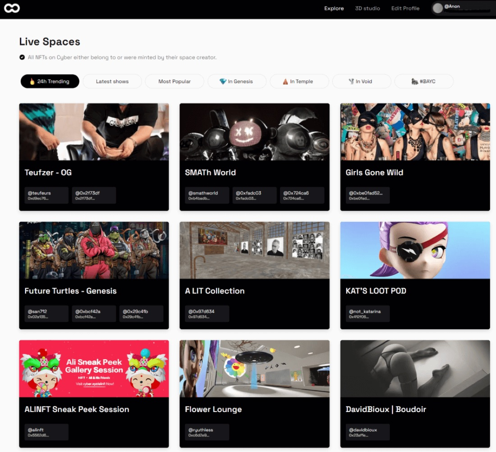
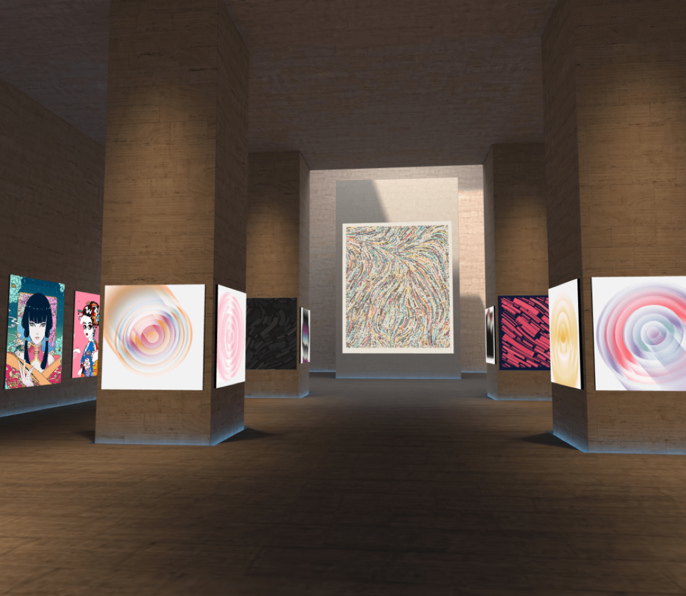
Das ist On Cyber: eine virtuelle Galerie im Metaverse, in der NFT-Besitzer und Künstler ihre Werke in einer 3D-Welt zeigen können. Hier sehen Sie zum Beispiel eine Galerie mit den beeindruckenden Exponaten des Sammlers Vincent Van Dough, der nur unter seinem Pseudonym bekannt ist. Der Sammler fiel der NFT-Community auf, als er anfing, Art-Blocks-NFTs zu Preisen aufzukaufen, die damals als extrem hoch galten.
Das Schöne an oncyber.io ist, dass es im Browser läuft:
- Um eine Galerie anzusehen oder zu bearbeiten, muss keine Software installiert werden.
- Es funktioniert auf dem Desktop wie auf mobilen Geräten.
- Mit VR-Ausrüstung wird es noch eindrucksvoller und tatsächlich immersiv. Aber auch ohne ist das Erlebnis weit umfassender, als sich durch zweidimensionale Marktplätze zu scrollen.
Animationen funktionieren gut, ebenso andere Formen von 3D-Kunstwerken, die entsprechend angelegt sind. Viele Werke entfalten ihre Wirkung erst richtig, wenn sie im dreidimensionalen Raum stehen. Probieren Sie es aus, es lohnt sich.
On Cyber für Galerie-Betreiber
1. Wie erstelle und kuratiere ich meine eigene Galerie?
Das Betrachten ist großartig und selbsterklärend. Aber was, wenn ich meine eigene Galerie aufbauen und kuratieren möchte? Hier wird es richtig interessant. NFT-Kunst aufzuhängen ist so einfach wie das hier:
- Mit der eigenen Wallet anmelden (zum Beispiel MetaMask).
- Einen Galerie-Stil wählen. Kostenlose Galerien stehen zur Verfügung, wie im Bild unten. Fortgeschrittene können große Galerien über einen NFT-Marktplatz erwerben.
- In der übersichtlichen Galerie-Oberfläche klicken (im Screenshot sehen Sie etwa, wie man ein Werk hinzufügt).
- Das NFT auswählen, das gezeigt werden soll.
- Größe und Position anpassen, Rahmen hinzufügen und mehr.
- Fertig ist die Galerie.
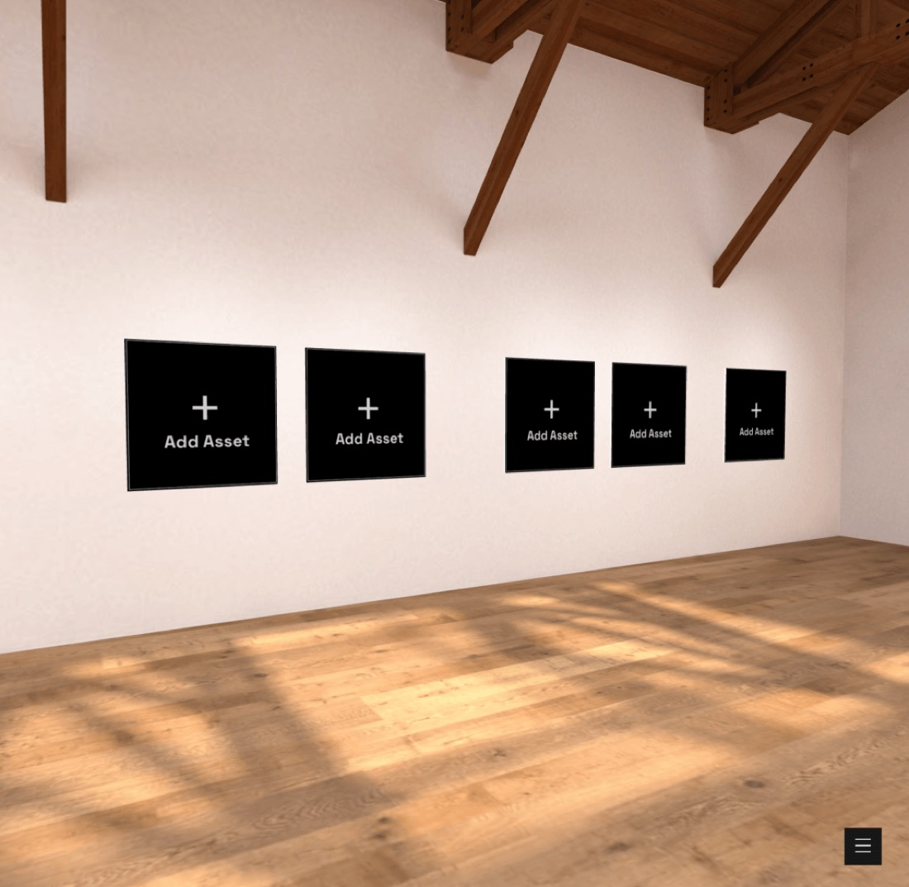
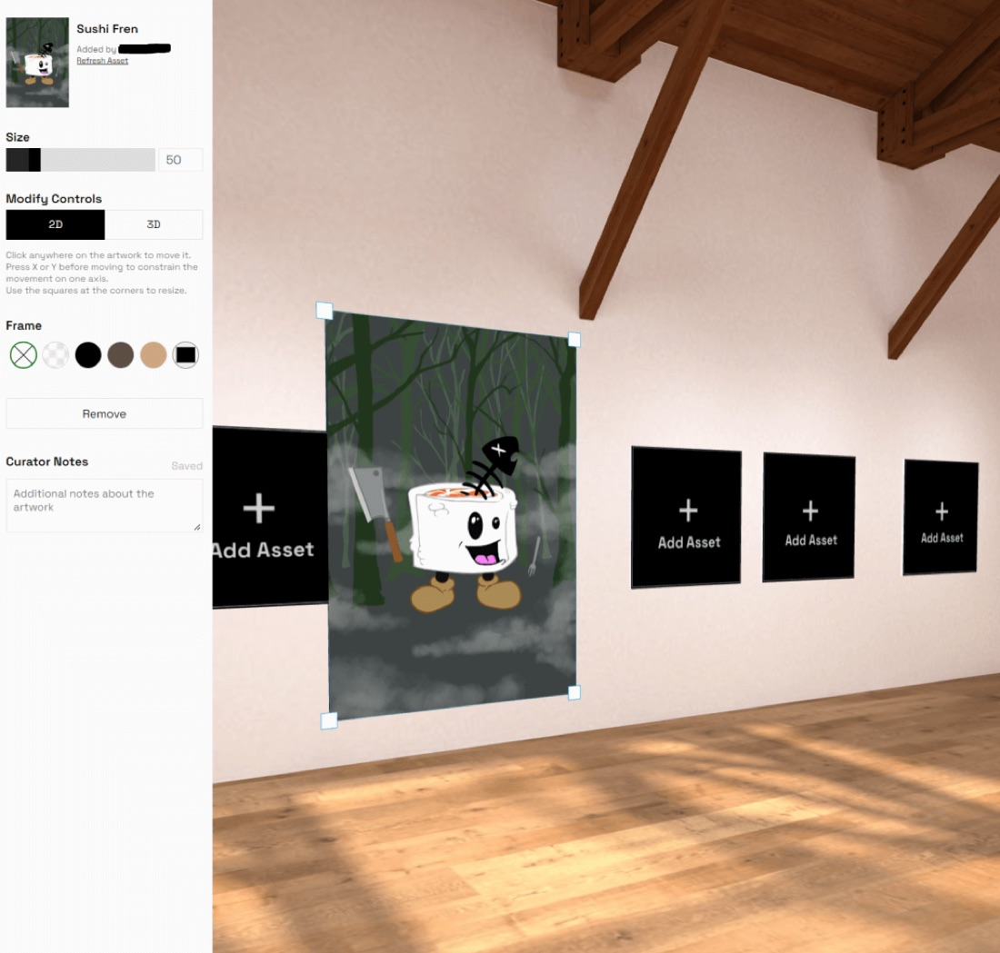
Oncyber kann auf NFTs aus verschiedenen Wallets und von verschiedenen Chains zugreifen, etwa Ethereum (ETH), Solana (SOL) oder Polygon (MATIC). Gut zu wissen: On Cyber hat zu keinem Zeitpunkt Kontrolle über den Inhalt der Wallet. Es zeigt nur die Daten an, die ohnehin auf der Blockchain liegen.
2. Wie arbeite ich in meiner Galerie mit Freunden zusammen?
Es wäre natürlich schade, wenn man nur eigene Werke zeigen könnte. Wie in einer echten Galerie lassen sich auch fremde Werke ausstellen. Solche Partnerschaften heißen Collaborations, kurz „Collabs". Der Ablauf ist im Grunde geradlinig, verlangt aber ein wenig Verständnis dafür, wie er funktioniert, denn es müssen Links erzeugt und angeklickt werden.
Das sind die Schritte für den Galerie-Betreiber:
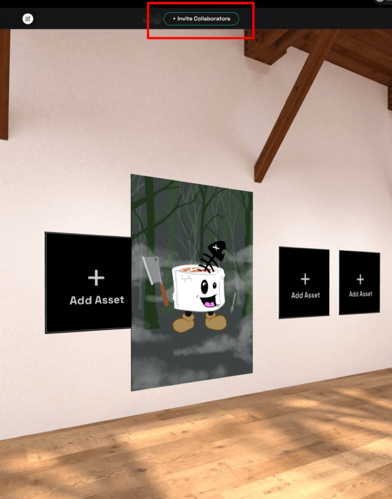
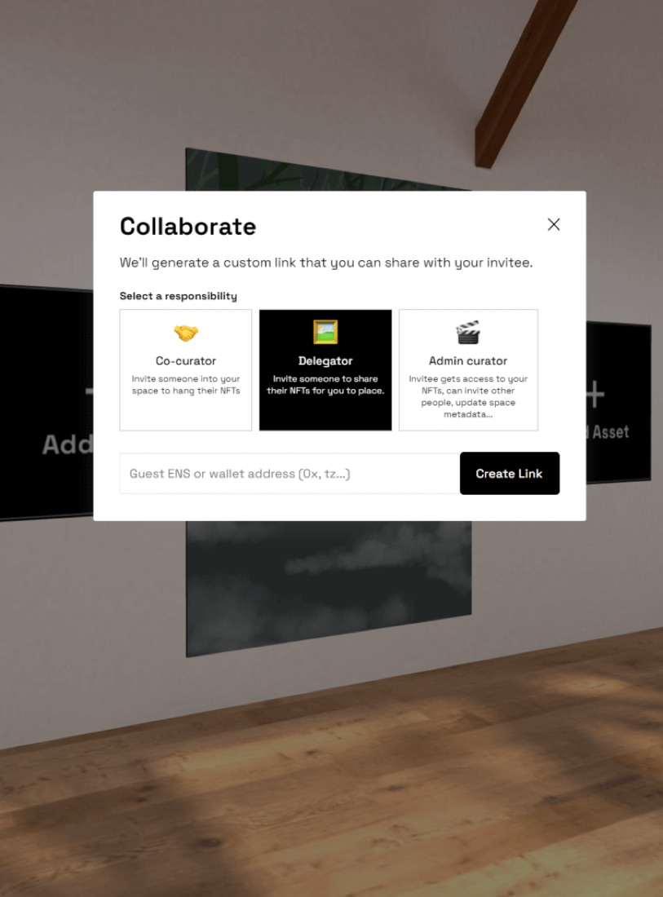
Co-curator: darf bestimmen, welches Werk gezeigt wird und wo es in Ihrer Galerie hängt.
Delegator: darf nur bestimmen, welches Werk gezeigt werden darf. Wo und wie es hängt, entscheiden Sie als Galerie-Betreiber.
Admin Curator: hat volle Kontrolle über Ihre Galerie, darf also auch Ihre NFTs zeigen und weitere Personen einladen.
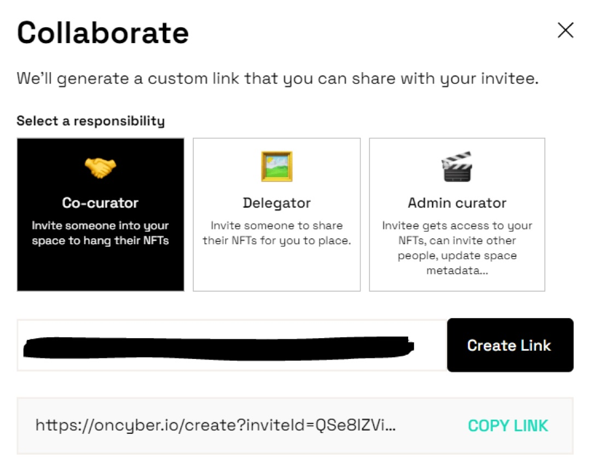
4) Link kopieren und verschicken.
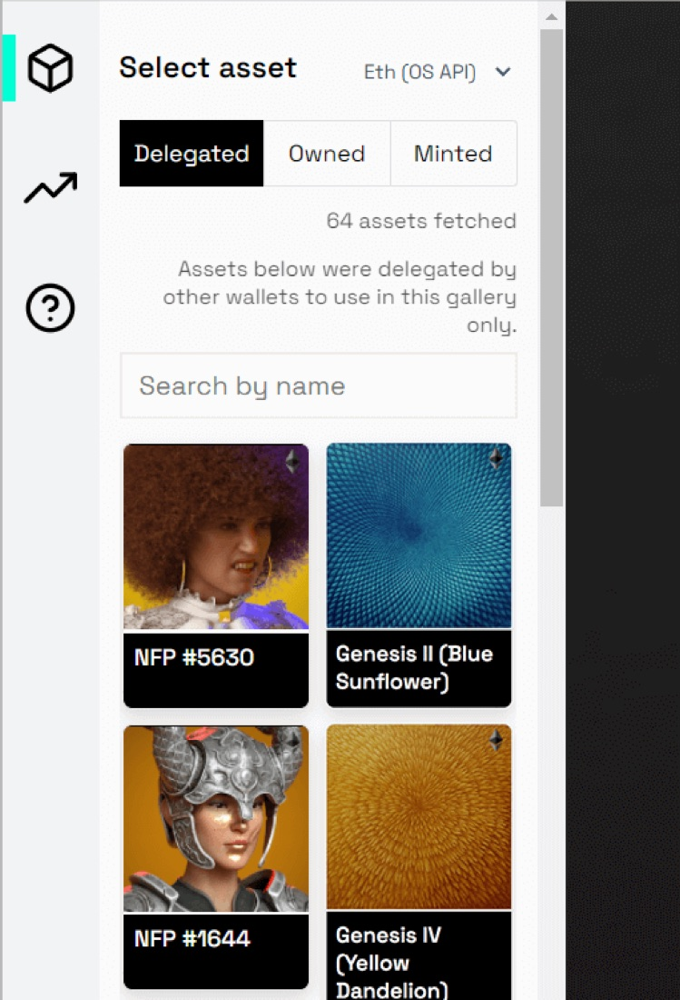
6) Sobald neue Werke auftauchen, können Sie sie aufhängen wie Ihre eigenen.
Wichtiger Hinweis vom Oncyber-Team:
„Wir fragen die Wallet-Adresse nur zur Bestätigung ab, um die Werke zu identifizieren, zu laden und anzuzeigen. Wir greifen nicht auf die Wallet zu und führen damit keinerlei Operationen aus."
On Cyber für Künstler
1. Ich habe eine Einladung bekommen. Was soll ich tun?
Sie hatten ein Gespräch mit einem Galerie-Betreiber, und er oder sie lädt Sie ein, Ihre Arbeit auszustellen? Das ist eine schöne Gelegenheit, und wir zeigen Ihnen jetzt die nötigen Schritte. Sie sind dabei an nichts gebunden und können dasselbe Werk gleichzeitig in beliebig vielen Galerien zeigen.
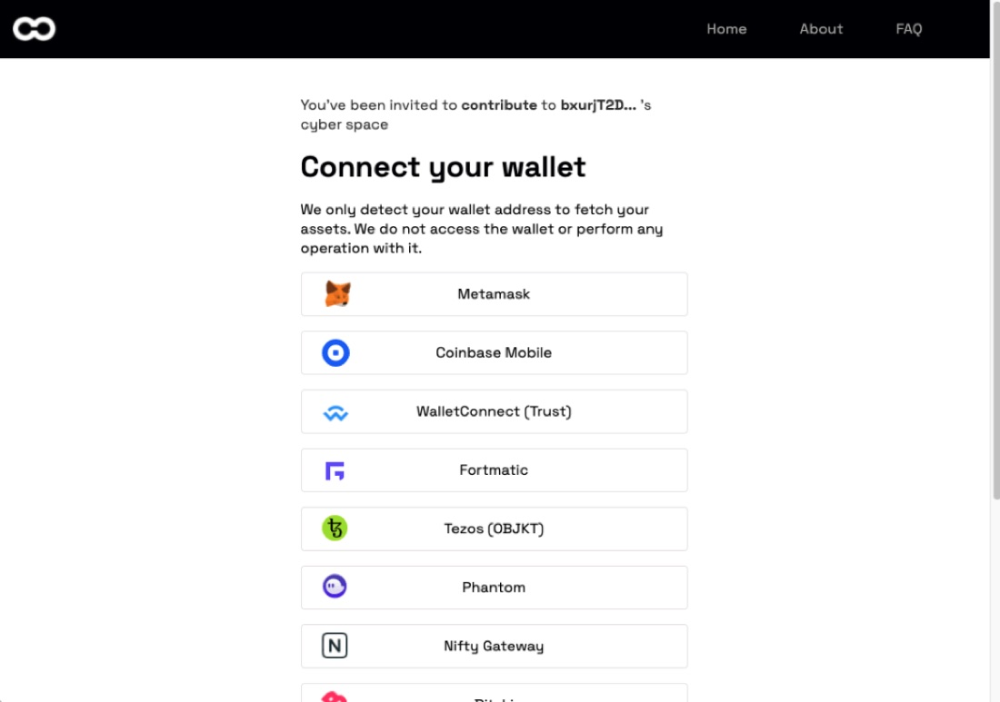
2) Wenn Sie den Link von Ihrem vertrauenswürdigen Galerie-Betreiber erhalten haben, klicken Sie ihn an. Es erscheint ein Fenster, in dem Sie aufgefordert werden, sich mit der Seite zu verbinden.
Prüfen Sie die Adresse in der Adresszeile Ihres Browsers genau. Sie MUSS mit der offiziellen Domain beginnen:
🔒 https://oncyber.io/
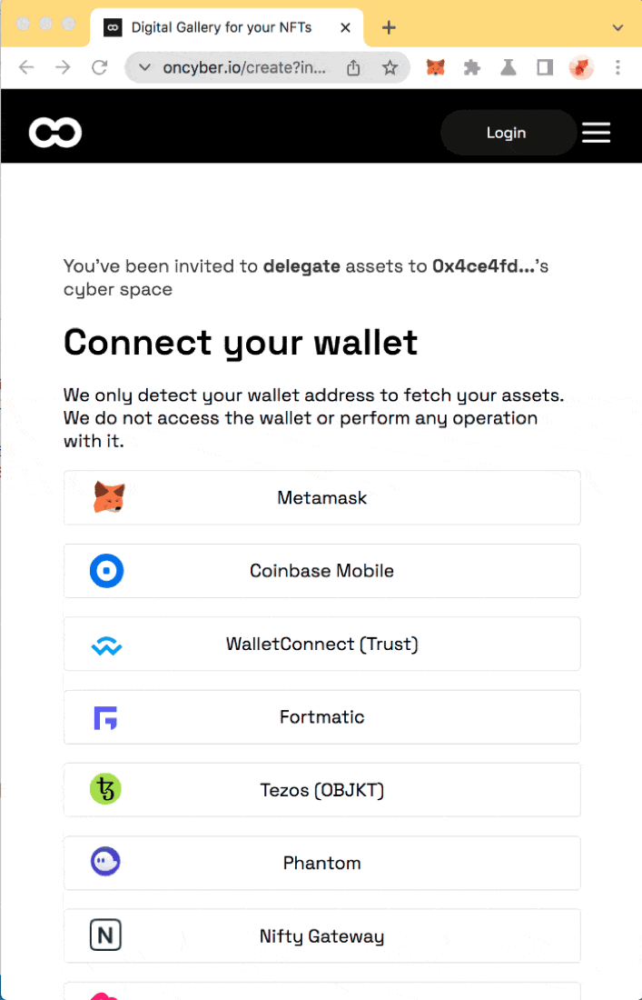
4) Haben Sie nur die Rolle „Delegator" bekommen, erscheint ein Fenster, in dem Sie auswählen, welche NFTs der Galerie-Betreiber zeigen darf.
5) Das war es. Jetzt können Sie sich zurücklehnen und den Galerie-Betreiber Ihre Kunst zeigen lassen.
2. Wie kann ich sicher sein, dass mein NFT nicht gestohlen wird?
Das ist eine gute und wichtige Frage. Bei Krypto sollte man immer vorsichtig sein. Achten Sie zuerst darauf, immer die richtige Domain zu benutzen: oncyber.io. Steht in der Adresszeile etwas anderes, führen Sie keine weiteren Schritte aus und schließen Sie das Browser-Fenster.
Sie sollten wissen, dass Oncyber technisch jedes beliebige NFT der Welt anzeigen könnte, auch ohne Zustimmung. Das würde aber nicht zur Geschäftsidee passen, nach der man nur eigene NFTs oder die von Mitwirkenden zeigen kann. Deshalb verlangt Oncyber den Nachweis, dass Sie eine Wallet kontrollieren. Das geschieht, indem eine bestimmte Nachricht signiert wird. Die passende Signatur kann nur der Besitzer der Wallet erzeugen. Zu keinem Zeitpunkt findet dabei eine Transaktion auf der Blockchain statt. Ihre NFTs sind damit vollkommen sicher. Soweit wir wissen, nutzt Oncyber für die Verwaltung der Galerien keine Transaktionen auf der Blockchain. Sollte sich das künftig ändern, müssen wir die Sicherheit erneut betrachten.
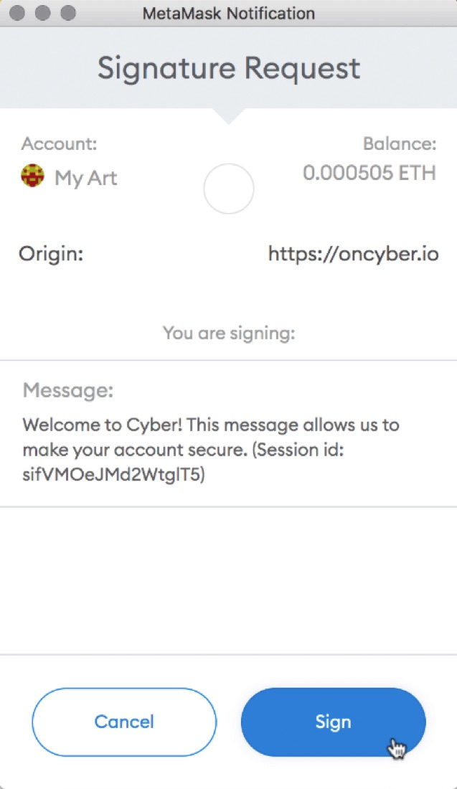
Vielen Dank
Wenn Sie diesen Artikel bis hierher gelesen haben, sollten Sie sich im On-Cyber-Portal auskennen. Vielen Dank, dass Sie diesen Weg mit uns gegangen sind. Bei Fragen besuchen Sie uns gern im HAUS HOPPE Discord.
Über den Autor

Johannes hat seine erste Bitcoin-Transaktion im Jahr 2013 durchgeführt. Seitdem faszinieren ihn Kryptographie und das Cypherpunk-Ethos. Er ist im Herzen selbst ein Cypherpunk, und deshalb ist so ziemlich alles, was er baut, quelloffen und kostenlos, so wie ordpool.space.
Über den Autor
CasperB ist ein anonymer NFT-Sammler aus Asien. Er unterstützt unabhängige Künstler, indem er sie in seiner Oncyber-Galerie zeigt. CasperB ist seit Art Blocks' Curated Series 2 in der NFT-Welt unterwegs.
Mehr aus dieser Reihe
NFT kaufen – die vollständige Anleitung
Der lange: Wallets, Marktplätze, was ein Token überhaupt ist, und drei verschiedene Gründe, warum Menschen kaufen.
Hintergrundwissen zu Blockchain-Token
Was darunter liegt: Token-Standards, und was fungibel und nicht-fungibel wirklich bedeuten.
NFT analysieren und bewerten
Wie man eine Collection anschaut, bevor man einsteigt, und welche Risiken sich zu prüfen lohnen.
NFT-Derivate
Teilbesitz, Indizes und die Dinge, die wie NFTs aussehen, aber keine sind.